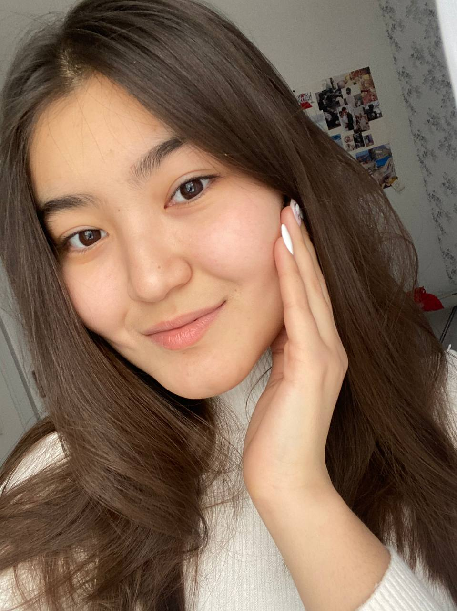

Good time of a day!
You are welcome to little piece of my own World
"
No one is you and that is your superpower.
"
©
Dave Grohi

Some Information About Me
My full name is Tulegenova Dilnaz Dauletkalievna. I am 17 years old and I am a first-year student of AStanaIT University. I am a Taurus by the Horoscope. My date of birth-13th of May.
History of my birth
My parents lived in one microregion of our small town "Uralsk" in WKR. So they were familiar. They are both the eldest children in their family, so I was the first grandchild for my grandparents from both sides. According to my grandmother's words, the whether was warm and sunny. My father did not like the number "13", so he was worried about my birth.
How my family called me "Dilnaz"?
All members of my family suggest pretty names of girls and put it into the hat and took one-by-one. My father took the piece of paper with the name "Dilyara". My aunt, younger sister of my father, said that it does not suit me, after that she offered my current name and nobody was against.
I like TV-shows and learning languages
My favourite TV-shows: "The Vampire Diaries", "The Originals", and lots of Doramas. I want to be a multilingual person, so I aim to learn much more languages than only 3. French and Turkish are also in this roaster.
My hobbies
I am very shy, when it is concerning my hobbies. For instance, I like dancing when nobody sees, I like singing when nobody hears. However, I also like reading books. Unfortunately, I do not have any time to read books now. My favourite book is "Gone with the wind" written by Margaret Mitchell.
3 favourite books
| Name |
Author |
Main characters |
| Gone with the wind |
Margaret Mitchell |
Scarlett, Rett Battler |
| Two can keep a secret |
Karen M. McManus |
Ellery, Ezra, Malcolm |
| Lucky in love |
Kasie West |
Maddie, Seth |